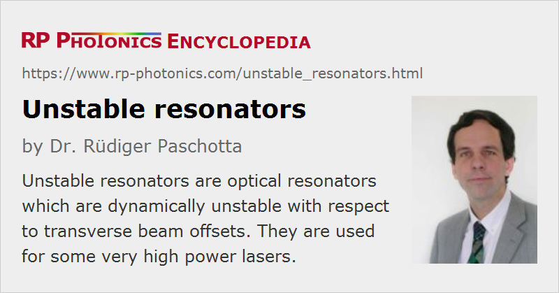

Unstable Resonators
Definition: optical resonators which are dynamically unstable with respect to transverse beam offsets
More general term: optical resonators
German: instabile Resonatoren
Categories: general optics, optical resonators
How to cite the article; suggest additional literature
Author: Dr. Rüdiger Paschotta
Depending on details of its design, an optical resonator is either stable or unstable with respect to transverse beam offsets. If it is stable, any geometrical ray injected into the system with some not too large initial transverse offset position and angle will stay within the system during many round trips. In an unstable resonator, such a ray will be ejected sooner or later.
The properties of the resonator modes are very different in the stable or unstable regime. Unstable resonators have a number of special properties:
- The modes always experience significant diffraction losses, which are often very high (order of 50 % per round trip or higher).
- The diffraction losses generally become higher for higher mode orders. This intrinsic mode discrimination can help one to obtain single transverse mode operation of a laser.
- Particularly for resonators with diffraction at hard edges, the transverse mode profiles are very complicated and usually exhibit pronounced ring structures. Only numerical methods can then be used for calculating the detailed mode profiles. For some soft-aperture resonators (see below), however, the mode properties can at least be estimated with reasonable accuracy using analytical methods.
- In a linear unstable resonator, the wavefronts of the counterpropagating beams do not necessarily match each other, and they do not necessarily match the surfaces of the two end mirrors.
The attribute “unstable” should not be misunderstood as stating that such resonators are less robust than stable ones. To the contrary, the alignment sensitivity of unstable laser resonators can be even substantially lower than for stable resonators, and rather robust high-power lasers have been developed with unstable resonators.
Output Coupling in Unstable Laser Resonators
Unstable laser resonators are usually made such that the mentioned diffraction “losses” are taken as the useful laser output. The output coupler can be an ordinary laser mirror where the field distribution extends beyond the mirror edges, so that some light passes the mirror on the sides (see Fig. 1). Although the output beam profile has a hole in the near field, the beam divergence is quite small, and the beam quality for some very high-power lasers with such resonators is at least higher than achievable with stable resonators – particularly if large diffraction losses can be tolerated, so that the hole can be made relatively small.
In other cases, a scraper mirror (Fig. 2, e.g., a tilted mirror with an elliptical hole) is used, which “scrapes off” some light from the circulating intracavity beam.
Another possibility is the use of a variable reflectivity mirror, where the reflectivity decreases with increasing distance to the beam axis – often according to a Gaussian or super-Gaussian function. This approach can avoid the otherwise typical ring structures in the near-field output beam profile and is often suitable for obtaining a rather high beam quality.
In some cases, a resonator is stable in one direction and unstable in the other direction. Such hybrid resonators are sometimes used in situations with highly elliptical beams [14].
Advantages and Limitations of Unstable Laser Resonators
Although most laser resonators are designed as stable resonators, unstable resonators can have substantial advantages in certain cases. In particular, they can help to generate a laser beam with very high optical power and still relatively high beam quality. A frequent problem with stable resonators in such cases is that a large enough fundamental resonator mode cannot be realized, or that this mode is highly sensitive to disturbances like thermal lensing or misalignment. An unstable resonator, however, can have a very large fundamental mode with a substantial net gain advantage over all higher-order modes, and with no excessive sensitivity. However, this principle usually works well only when the gain medium can provide a rather large gain. This can be the case in pulsed flashlamp-pumped or diode-pumped YAG lasers, in metal vapor lasers, excimer lasers and chemical lasers, for example. The application to low-gain lasers such as CO2 lasers or continuous-wave lamp-pumped solid-state lasers is more difficult and often leads to a lower beam quality.
Questions and Comments from Users
Here you can submit questions and comments. As far as they get accepted by the author, they will appear above this paragraph together with the author’s answer. The author will decide on acceptance based on certain criteria. Essentially, the issue must be of sufficiently broad interest.
Please do not enter personal data here; we would otherwise delete it soon. (See also our privacy declaration.) If you wish to receive personal feedback or consultancy from the author, please contact him e.g. via e-mail.
By submitting the information, you give your consent to the potential publication of your inputs on our website according to our rules. (If you later retract your consent, we will delete those inputs.) As your inputs are first reviewed by the author, they may be published with some delay.
Bibliography
| [1] | A. N. Chester, “Mode selectivity and mirror misalignment effects in unstable laser resonators”, Appl. Opt. 11 (11), 2584 (1972) doi:10.1364/AO.11.002584 |
| [2] | L. W. Casperson, “Mode stability of lasers and periodic optical systems”, IEEE J. Quantum Electron. 10 (9), 629 (1974), doi:10.1109/JQE.1974.1068485 |
| [3] | L. W. Casperson and S. D. Lunnam, “Gaussian modes in high loss laser resonators”, Appl. Opt. 14 (5), 1193 (1975), doi:10.1364/AO.14.001193 |
| [4] | J. M. Eggleston et al., “Radial intensity filters using radial birefringent elements”, J. Opt. Soc. Am. 71 (10), 1264 (1981), doi:10.1364/JOSA.71.001264 |
| [5] | E. Armandillo and G. Giuliani, “Achievement of large-sized TEM00 mode from an excimer laser by means of a novel apoditic filter”, Opt. Lett. 10 (9), 445 (1985), doi:10.1364/OL.10.000445 |
| [6] | N. McCarthy and P. Lavigne, “Large-size Gaussian mode in unstable resonators using Gaussian mirrors”, Opt. Lett. 10 (11), 553 (1985), doi:10.1364/OL.10.000553 |
| [7] | D. M. Walsh and L. V. Knight, “Transverse modes of a laser resonator with Gaussian mirrors”, Appl. Opt. 25 (17), 2947 (1986), doi:10.1364/AO.25.002947 |
| [8] | S. De Silvestri et al., “Unstable laser resonators with super-Gaussian mirrors”, Opt. Lett. 13 (3), 201 (1988), doi:10.1364/OL.13.000201 |
| [9] | T. J. McKee and G. T. Boyd, “Performance comparison of positive branch unstable resonator cavities for excimer lasers”, Appl. Opt. 27 (9), 1840 (1988), doi:10.1364/AO.27.001840 |
| [10] | S. De Silvestri et al., “Q-switched Nd:YAG laser with super-Gaussian resonators”, Opt. Lett. 16 (9), 642 (1991), doi:10.1364/OL.16.000642 |
| [11] | R. J. Lang, “Geometric formulation of unstable-resonator design and application to self-collimating unstable-resonator diode lasers”, Opt. Lett. 16 (17), 1319 (1991), doi:10.1364/OL.16.001319 |
| [12] | N. Hodgson, G. Bostanjoglo and H. Weber, “Multirod unstable resonators for high-power solid-state lasers”, Appl. Opt. 32 (30), 5902 (1993), doi:10.1364/AO.32.005902 |
| [13] | E. Armandillo et al., “Diode-pumped high-efficiency high-brightness Q-switched ND:YAG slab laser”, Opt. Lett. 22 (15), 1168 (1997), doi:10.1364/OL.22.001168 |
| [14] | K. Du et al., “Partially end-pumped Nd:YAG slab laser with a hybrid resonator”, Opt. Lett. 23 (5), 370 (1998), doi:10.1364/OL.23.000370 |
| [15] | J. Körner et al., “Novel unstable resonator configuration for highly efficient cryogenically cooled Yb:YAG Q-switched laser”, Opt. Express 27 (15), 21622 (2019), doi:10.1364/OE.27.021622 |
| [16] | A. E. Siegman, Lasers, University Science Books, Mill Valley, CA (1986) |
See also: optical resonators, resonator modes, variable reflectivity mirrors
and other articles in the categories general optics, optical resonators
|  |
If you like this page, please share the link with your friends and colleagues, e.g. via social media:
These sharing buttons are implemented in a privacy-friendly way!